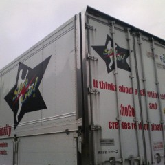

株式会社
ショーゴの
箱トラである。
（前略）
ムービースター
じゃない
ロックスター
でもない
（後略）
（前略）
貧しさと
憧れの中
夢に見た
R&R STAR
（中略）
果てしなく続く
"ON THE ROAD"
（後略）
作詞・作曲
浜田省吾
人はただ
気付きもせずに
過ぎて行く、
名もなき星を
地上の星を。
＜方陣算の事＞
大坂城に
忍び込んだ
五右衛門達は
小さな宝箱と
大きな宝箱を
手に入れた。
小さな宝箱には
一寸刻みで
一寸から
十寸まで
十本の
銀の棒が
入っていた。
(+ 1 10)
(+ 2 9)
(+ 3 8)
(+ 4 7)
(+ 5 6)
上図のように
五人とも
同じ長さに
なるように
均等に
分配した。
大きな
宝箱には
一寸から
二十五寸の
金の棒が
入っていた。
(+ 1 9 12 20 23)
(+ 3 6 14 17 25)
(+ 5 8 11 19 □)
(+ 2 10 13 □ □)
(+ 4 7 □ □ □)
同じように
五人で
均等に
分配したのだが
その組合せを
記した図の
右下隅が
虫に食われて
しまった。
さて、
□に入る数字は？